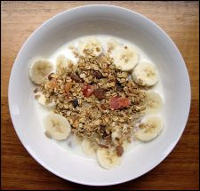

Mrs Bartlett’s toasted muesli
According to all the nutrition experts, the last meal you should skip is breakfast. Breakfast sets you up for the day, gives you the energy you need, and kick-starts your digestive system. This recipe does all that and more – you can eat it any time, any day, and it tastes great as well!
Muesli also has a broad appeal throughout New Zealand – it’s hearty enough for farm workers and delicate enough for city connoisseurs. I’ve been making this muesli for years, slowly changing it to suit our refined tastes. It is definitely a tried-and-true recipe.
Due to its rapid consumption in our household, I generally make a double quantity, using the roasting dish from our oven. I purchase all dry ingredients (other than rolled oats) from the bulk bins in the supermarket, which are less expensive than the pre-packaged varieties.
Download a nice printable version of this recipe (PDF, 170KB).
Toasted muesli
- 2 cups rolled oats
- 1 1/2 cups shredded coconut (ribbons rather than dessicated)
- 1/2 cup wheat germ (leave out for gluten-free option)
- 1/2 cup bran (leave out for gluten-free option)
- 1/2 cup raw, chopped mixed nuts (brazil nuts, almonds, pecans, walnuts, hazelnuts, macadamia nuts, etc.)
- 1/2 cup sesame seeds
- 1/2 cup sunflower seeds
- 1/2 cup pumpkin seeds
- 1/4 cup honey
- 2/3 cup vegetable oil (not olive oil)
- 1/2 cup dried fruits (apples, apricots, bananas, pears, sultanas, payaya, etc.)
Place first eight ingredients into shallow ovenproof dish. Mix honey and oil together by warming in microwave (or pot on top of stove). Do not over-heat – you will need to mix in with your hands. Pour honey and oil mixture over dry ingredients and blend together with your fingers. Bake in a moderate oven, preheated to 180°C.
About every five minutes, stir thoroughly using slotted spoon. To prevent burning, aim to mix top with toasted bottom layer. When mixture is golden-brown, remove from oven and let it sit to cool. When completely cold, add dried fruits. (If mixture is still warm, dried fruits will become extremely hard and tasteless.)